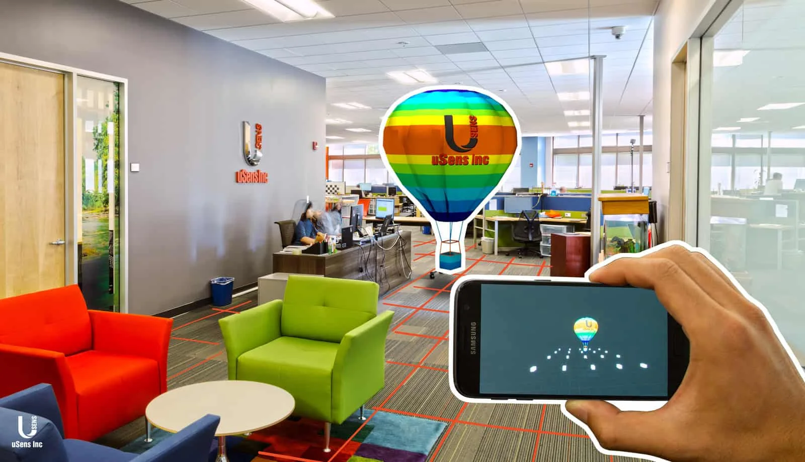
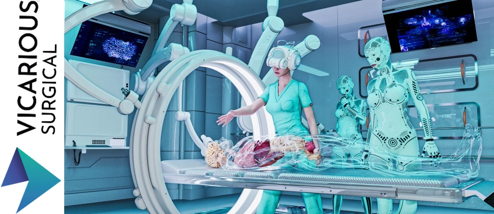
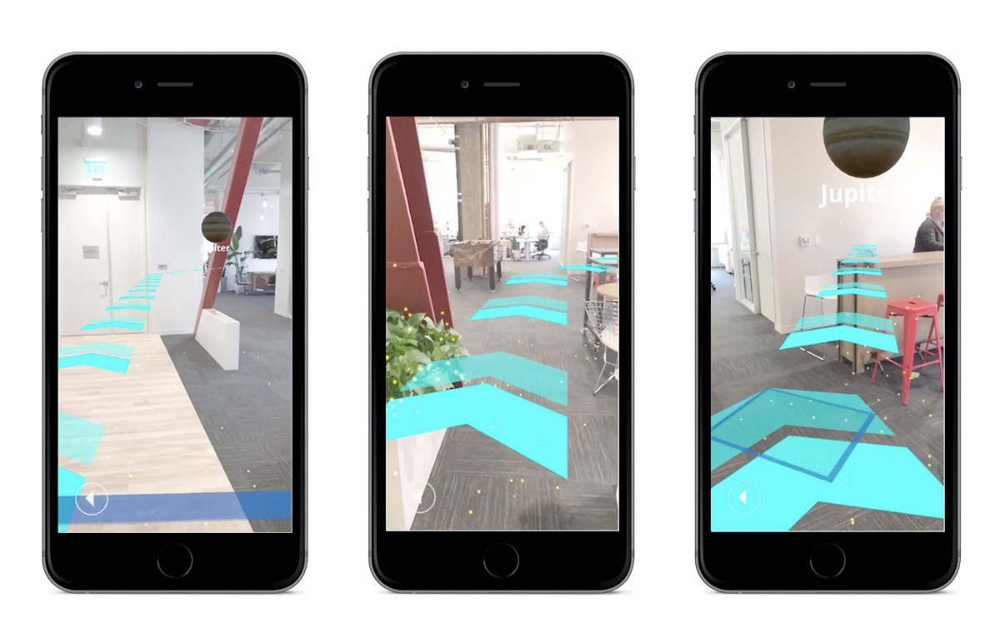

Virtual Reality and Augmented Reality are possibly two of the biggest trends in the entire tech world. We saw the rise of VR in gaming applications and mapping software, but what is the future of this technology? How will Virtual Reality impact on our day to day life? Is it going to be a scary matter or is the technology just moving a bit too fast? Let’s try to break down the subject in a simple way.
SLAM, The Future of VR
Simultaneous Localization And Mapping is the biggest focus when it comes to development at the minute: this technology is able to instantly translate data from the real world (by using sensors) into the virtual one and vice-versa. This avenue is currently studied by many different mobile app development companies, given the fact that Niantic based its success on a very embryonic version of SLAM, which was translating the surroundings into the app by using a floor algorithm (the same one that is generally used for QWERTY codes).
Simultaneous Localization And Mapping is currently used in TESLA’s autopilot and summon, two core elements of the car’s technology that let the vehicle process the surroundings in order to avoid crashes, understand how much battery is left and other vital pieces of information.
The dreams of yesterday are the hopes of today and the reality of tomorrow. Science has not yet mastered prophecy. We predict too much for the next year and yet far too little for the next ten.
Medical Training
Many are the Universities which are investing in training their students by using Virtual Reality peripherals. The first example that comes to mind is, of course, medical-related: by putting the student into a high quality represented situation, he’s able to understand the dynamic of the case without risking anyone’s life (especially if it’s done when studying very delicate surgeries). Encouraging the usage of such peripherals could be a breaking point in order to better prepare surgeons and specialists in subjects and operations that are naturally delicate.
Better Mapping Systems
It’s no secret that Google always wanted to explore the VR world. What we can expect in the near future is the combination of floor AR (the one used in order to present 3D maps in the current Google Maps application) and SLAM, in order to present a realistic projection of the surroundings in order to boost the user experience. Maps will surely be VR focused in the near future, that is not a secret, we just have to wait and see how this will evolve in the near future.
Conclusion
This is an exciting time for VR and AR developers, no doubts about it. The entire tech market is moving towards that direction and we can expect a big business growth in the next years. Virtual Reality is indeed taking over.p>